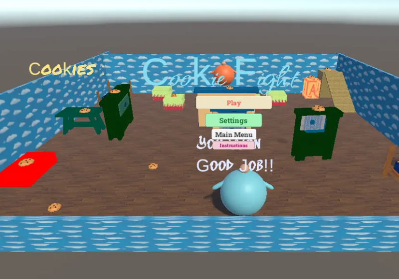
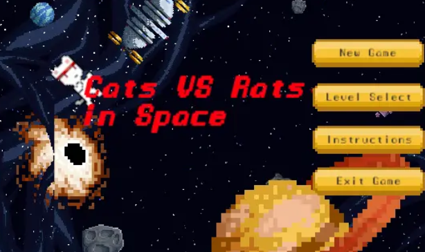
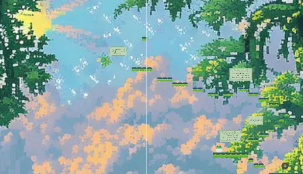
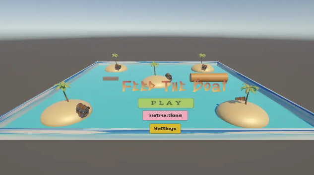

Unity/h2>
As part of my course I was also made to create games with Unity here are some I am most proud of...(click images to access games)

Cookie Fight
Cookie FIght was created for the G4C game challenge. Specifcially this was created under the Peaceformers game theme. The game depicts two babies in conflict over cookies an allegory of countries fighting for resources.
Skills: C#

Cats and Rats in Space
Cats v.s Rats in space was created for the G4C game challenge under the theme of road safety. The cats and rats continue there life-long feud but now in space. The cat acts as a pedestrian navigating the play area while the alien-rats are cars not following traffic rules and obstructing the road. Conflict between the two animals depicts the effect of unsafe road conduct.
Skills: Python

Forest Castle
This project, created using EarSketch, plays two different songs. The program ustilizes a variety of programming skills such as condtional statements and loops.
Skills: Python

Feed the Boat
Feed the Boat was created for the G4C game challenge under the theme Nurture with Nature with its close ties to the oceanic world and how humanities greed can disrupt the natural world. Here a boat in search of tressure destroys the habitat of a whale.